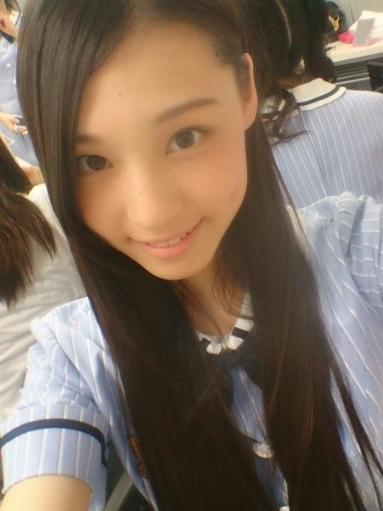
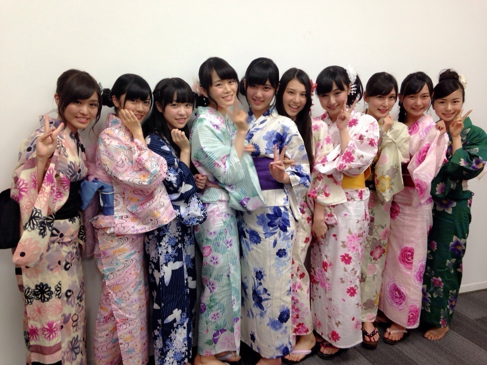

| 2014/08 07 Thu | 相楽伊織 みなさんはじめまして、さが らいおりです _(．．*) vol.1 |
みなさんはじめまして！
プリンシパルtroisで
ご挨拶させていただいた2期生
高校2年生16歳
相楽伊織 さがらいおりです
今日からこの相楽伊織ブログに
参加します！！
これからよろしくお願いします♪

自己紹介
名前
さがら いおり
ニックネーム
い お り でお願いします♪
あだ名をつけてくれても
嬉しいです_(．．*)
出身地
埼玉県
育ちも埼玉です！
生年月日
1997(平成9年)11月26日
血液型
Ｏ型
また聞きたいことあったら
いつでも聞いてくださーい♪
7/11-12
六本木のアンダーライブ
初めてみなさんの前で
パフォーマンスしました！
バレッタで一人で
ステージに出て歌うとこがあって
スゴい緊張しました(>_<)
ライブ前日のリハの時は
ひな子が夜遅くまで練習に
付き合ってくれて頑張ったけど
本番は緊張しちゃって
上手く出来なくて、悔しかった、、。
7/25-26
渋谷でのアンダーライブでは
ユニット(でこぴん 松村さんポジ)に初挑戦しましたー♪♪
ミスが目立ってしまったけど
みんなに支えられながら
なんとか千秋楽を迎えられました！
ライブとっても楽しかったです♪♪
これから夏のツアーも始まるので
たくさんライブを経験して
緊張しても踊れるようにしたいです
8/2 初握手会！！！
東京ビッグサイトで
初めて握手会に参加しました♡
ワンピース着ました＊
予想以上にたくさんの方が
来てくれて
握手会に初めて来た方とか
海外から来てくれた方もいて
びっくりでした！！！
暑い中いおりに会いに来てくれて
ありがとうございました！！
とっても嬉しかったし
楽しかったです♪♪
また来てくださいね(´,,•ω•,,)??
今回はお披露目みたいな
感じだったけど、
これから個握も始まるので
いっぱい遊び来てくださーい♡
AKB新聞さんで相楽伊織の皆で
撮影してきました！
8/15に発売なので
ぜひ見てみてください

今年初の浴衣着ました♪♪
あと花火も今年初でした、
そーいえば
髪の毛15cm切りました、
かりんの正規メンバー昇格
2期生の中だとかりん推し♡
聞いたときは自分の事
みたいに嬉しくて
いっぱいおめでとうって
言いました : ）
すでに公開されてたますが
ナタリーさんで
初グラビア撮影をして頂いたので、
まだ見てない方は
見てみてくださーい( ´艸｀)♡
初インタビューもしました！
あと、乃木ここが
公開されるので
そちらもぜひ見て下さい！
遊園地に行ってきました(^-^)/
これから色々なことに挑戦して
たくさんの方に応援して頂けるように頑張りますので、
応援よろしくお願いします！
い お り